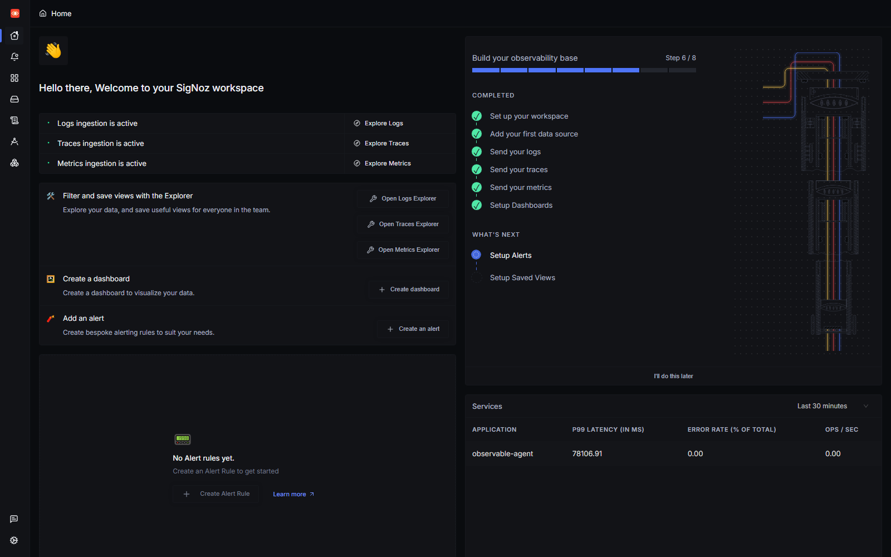
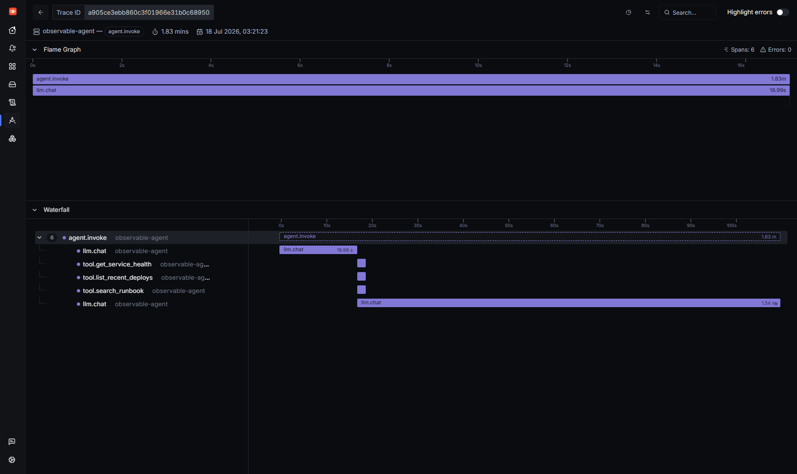
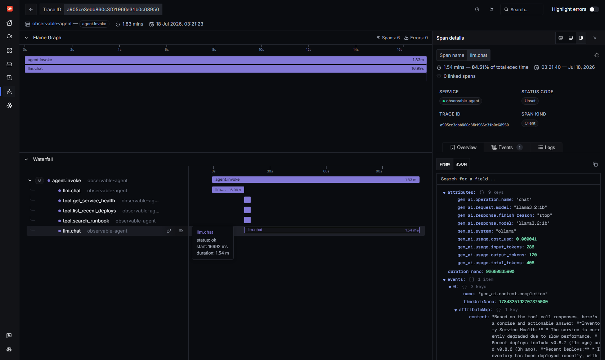
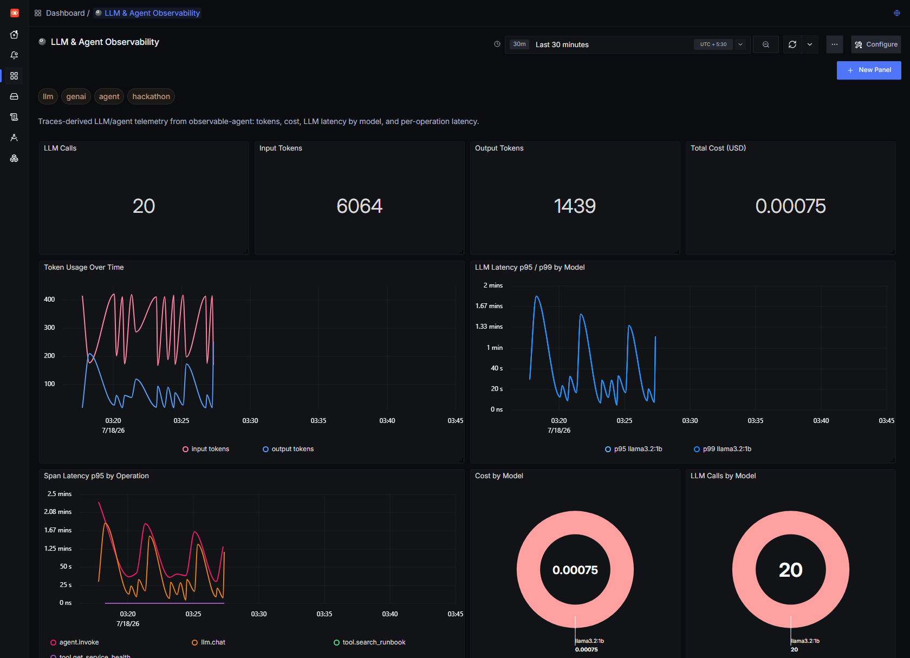

"If you can't observe your AI agents, you don't own them."
That line from the Agents of SigNoz hackathon stuck with me, so I tested it literally. I took a small SRE "sidekick" agent running on a local Llama model — no OpenAI bill, no vendor dashboard — wired it up with OpenTelemetry, and pointed it at a self-hosted SigNoz. Then I watched what an agent actually does when you ask it a question.
The short version: the tool calls were never the problem. One LLM call was 84.5% of the entire request. I only know that number because the agent had eyes.
This post is the narrow, practical walkthrough: self-host SigNoz, instrument an agent with the OpenTelemetry GenAI semantic conventions, and read the trace, tokens, cost, and latency tail that come out the other side.
| Piece | What I used |
|---|---|
| Observability backend | SigNoz v0.133 (self-hosted via Foundry) |
| Telemetry | OpenTelemetry Python SDK (manual spans + metrics + logs) |
| Transport | OTLP/HTTP → :4318 |
| LLM | Ollama running llama3.2:1b and llama3.2:3b on CPU |
| Agent | ~200 lines of Python: a tool-calling loop |
Heads-up if you're following an old tutorial: the install.sh script and the bundled docker-compose files are deprecated as of v0.130. SigNoz now installs through Foundry, a small "observability-stack-as-code" CLI. It's still three steps:
# 1. install the Foundry CLI
curl -fsSL https://signoz.io/foundry.sh | bash
# 2. a five-line casting.yaml (this is the whole file)
# apiVersion: v1alpha1
# kind: Installation
# metadata: { name: signoz }
# spec: { deployment: { flavor: compose, mode: docker } }
# 3. deploy
foundryctl cast -f casting.yaml
I'm on Windows, so I ran everything inside WSL 2 with Docker Engine — not Docker Desktop. That's not a personal quirk: SigNoz's own docs warn that ClickHouse Keeper crash-loops (exit 139, segfaults) under Docker Desktop's VM layer on Windows. I hit exactly that before switching, so consider this your warning too.
A minute later the UI is on http://localhost:8080, and its onboarding checklist lights up green the moment your app starts sending data:

Three ticks — logs, traces, and metrics ingestion active — and my service observable-agent shows up in the services list. That's the whole "did my telemetry land?" question answered in one screen.
The agent answers on-call questions like "Is checkout healthy?" or "What's my error budget?". It has four tools:
get_service_health(service)list_recent_deploys(service)calculate_error_budget(slo_percent, actual_error_rate)search_runbook(topic)It runs the classic agent loop: send the question + tool schemas to the model, let the model pick tools, run them, feed results back, and let the model write the final answer. Nothing exotic — which is exactly the point. This is the shape of most "AI agents" in production.
What makes it observable is a three-level span tree:
agent.invoke (SERVER) ← one per user question
└─ llm.chat (CLIENT) ← each model round-trip
└─ tool.<name> (INTERNAL) ← each tool execution
OpenTelemetry has GenAI semantic conventions — a standard set of gen_ai.* attributes so any backend can understand an LLM call. Instead of inventing my own keys, I set the standard ones on each llm.chat span:
with tracer.start_as_current_span("llm.chat", kind=SpanKind.CLIENT) as span:
span.set_attribute("gen_ai.system", "ollama")
span.set_attribute("gen_ai.operation.name", "chat")
span.set_attribute("gen_ai.request.model", model)
resp = client.chat.completions.create(model=model, messages=msgs, tools=TOOL_SCHEMAS)
span.set_attribute("gen_ai.response.finish_reason", resp.choices[0].finish_reason)
# one helper writes tokens + cost to BOTH the span and the metrics:
record_llm(model, resp.usage.prompt_tokens, resp.usage.completion_tokens, latency_ms)
That record_llm helper is where the trick lives — the same numbers land on the span and on OpenTelemetry metrics in one place:
def record_llm(model, in_tok, out_tok, latency_ms):
cost = cost_usd(model, in_tok, out_tok)
attrs = {"gen_ai.request.model": model, "gen_ai.system": "ollama"}
token_counter.add(in_tok, {**attrs, "gen_ai.token.type": "input"})
token_counter.add(out_tok, {**attrs, "gen_ai.token.type": "output"})
cost_counter.add(cost, attrs)
llm_latency.record(latency_ms, attrs)
span = trace.get_current_span() # the live llm.chat span
span.set_attribute("gen_ai.usage.input_tokens", in_tok)
span.set_attribute("gen_ai.usage.output_tokens", out_tok)
span.set_attribute("gen_ai.usage.cost_usd", round(cost, 6))
So one call feeds two questions: "what happened in this exact request?" (the span) and "what's happening across all of them?" (the metrics gen_ai.client.token.usage, gen_ai.client.cost, gen_ai.client.operation.duration).
That's it. No agent framework, no auto-instrumentation magic — just the standard conventions, so SigNoz knows exactly what it's looking at.
A note on the spec (I checked the docs, as the guide advises). The OpenTelemetry GenAI semantic conventions are at Development stability and recently moved to their own repo. A few honest deviations in the code above:
gen_ai.systemis now deprecated in favour ofgen_ai.provider.name;gen_ai.usage.input_tokens/output_tokensare the current names (theprompt_tokens/completion_tokensyou see are the OpenAI SDK's field names, which I map onto the span); andgen_ai.response.finish_reasonsis officially plural (a string array).gen_ai.usage.total_tokens,gen_ai.usage.cost_usd, and thegen_ai.client.costmetric are my own extensions — the spec has no cost signal yet. The spec also modelsgen_ai.client.token.usageas a Histogram andgen_ai.client.operation.durationin seconds; I kept a counter and milliseconds for readability. And per the span guide the recommended span name is{operation} {model}(e.g.chat llama3.2:1b) — I usellm.chatbecause it reads cleaner in a waterfall.
Here's a single question — "Inventory feels slow. Pull its health, recent deploys, and the right runbook." — as one distributed trace in SigNoz:

Six spans, zero errors. Read top to bottom:
agent.invoke — the whole request, 1.83 min.llm.chat (17 s) — the model reads the question and decides which tools to call.tool.get_service_health, tool.list_recent_deploys, tool.search_runbook — three tools, each ~1 ms.llm.chat (1.54 min) — the model synthesizes the final answer from the tool output.The tools are a rounding error. The first LLM call is quick. The final synthesis call is the whole story — and SigNoz labels it for you when you click the span:

1.54 mins — 84.51% of total exec time. Right there in the drawer are the GenAI attributes I set: gen_ai.request.model = llama3.2:1b, input_tokens = 286, output_tokens = 120, total_tokens = 406, gen_ai.usage.cost_usd, and finish_reason = stop. SigNoz even captured the completion text as a span event.
This is the payoff of the semantic conventions: I didn't build a custom "LLM view." I set standard attributes, and the generic trace UI became an LLM debugger. The lesson — the long-context generation, not the tools, owns your p95 — is the kind of thing you'd never guess from logs alone.
One trace is a debugging tool. To own the agent I need aggregates, so I built an LLM & Agent Observability dashboard straight from the same span attributes:

Across a short load run of varied SRE questions:
agent.invoke and llm.chat ride high while every tool.* span sits pinned to the floor. The waterfall lesson, now true across the whole fleet.About that cost: locally it's essentially zero (I compute it from a per-model price table). But the instrumentation is identical to what you'd use against a paid API. Point the provider at openai or anthropic instead of ollama and the same dashboard is now watching real dollars — before the invoice does.
The trace → span drawer won me over. Because SigNoz speaks the OpenTelemetry GenAI conventions natively, a plain span turned into a per-call LLM inspector — model, tokens, cost, finish reason, and the completion event — with zero custom UI. Add the "% of total exec time" on each span and root-causing a slow agent stops being guesswork.
Runner-up: the metrics query builder let me group the same gen_ai.* data by model and token type without writing SQL.
casting.yaml and one foundryctl cast. Traces, metrics, and logs in one place, on my laptop, for free.Next, I'm turning this into a Track 01 project: a self-healing SRE sidekick that reads its own SigNoz traces to decide what to do. But that's another post.
Everything here — the agent, the OpenTelemetry wiring, and the dashboard JSON — is reproducible; the commands above are the ones I actually ran.